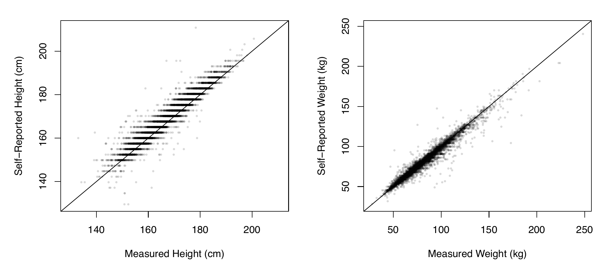
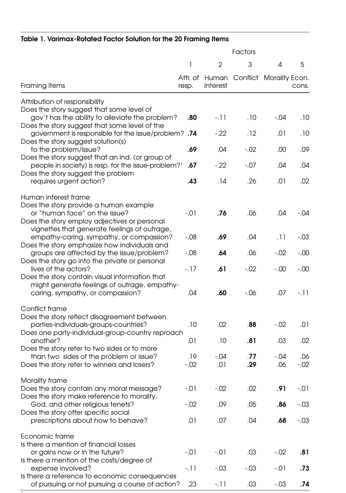

Fairness problems appear when the errors, \(e\), differ systematically between objects to be raited
Question from the 1980s SAT
RUNNER : MARATHON :: _______ : _______
Answer Options:
(A) envoy : embassy
(B) martyr : massacre
(C) oarsman : regatta
(D) referee : tournament
(E) horse : stable
Peril 3: unintended consequences
Goodhart’s law: When a measure becomes a target, it ceases to be a good measure.
Example: college ranking.
The measure does not merely describe behavior. It can redirect behavior toward the score.
Question to ask: What will people do differently once this number carries rewards or penalties?
Lauderdale, ch. 1.
Peril 4: malign intentions
Measurement choices can be designed or used to serve a harmful purpose.
Example: Redlining, changing the meaning of unemployed, removing spending from GDP
Numbers can make a preferred conclusion appear neutral or technical.
Question to ask: Who chose the target and indicators, and whose interests do those choices serve?
Lauderdale, ch. 1.
Reliability and validity
Reliability: repeated measurements give similar results. Validity: the measurements capture the intended target.
Reliable and valid
Consistent and on target
Reliable, not valid
Consistent but systematically off target
Valid on average, not reliable
Centered overall but inconsistent
Neither
Inconsistent and off target
What counts as error depends on the level of measurement
Level
Example
Error can be…
Nominal
mode of travel; news frame present?
only right or wrong: \(m \neq \mu\)
Ordinal
agree–disagree scale
too low, right, or too high
Interval
temperature in °C
a difference: \(\epsilon = m - \mu\)
Ratio
GDP per capita
a difference or a ratio: \(m/\mu\)
Lauderdale, pp. 63–64.
Self-reported height and weight

Lauderdale Figure 3.3: self-reported versus exam-measured height (left) and weight (right), NHANES 2021–23. Points cluster around the diagonal, with height reports slightly above it.
Lauderdale, Figure 3.3, p. 89. NHANES 2021–23, respondents aged 16+.
What the benchmark reveals
Height
Weight
Reliability, \(\rho(m,\mu)^2\)
0.91
0.95
Bias (mean error)
+1.68 cm
−0.67 kg
Error SD
3.07 cm
4.83 kg
Men over-report height more (+2.04 vs. +1.38 cm); women under-report weight more (−1.19 vs. −0.06 kg).
The tape curves at the floor, so everyone reads high
common bias \(\delta\)
This person (or a particular group of people) slouches or has voluminous hair
unit-specific bias \(\gamma_i\)
The pencil mark lands a little differently each time
noise \(\eta_{ir}\)
Lauderdale, pp. 65–66.
Dartboard connection: Which source shifts the shots, shifts one person’s cluster, or spreads the shots out?
Worked example: self-reported social-media minutes
Setup: We treat a device log as the target and ask each person to report their minutes twice.
Step 1: Compare each report with the log
Person
Logged minutes
Reports
Report errors
A
60
55, 45
−5, −15
B
120
95, 85
−25, −35
C
200
145, 155
−55, −45
Step 2: Look for the pattern
Common bias:
Unit-specific bias:
Noise:
Reliability is not accuracy
I step on the scale 5 times, each time it tells me that I weigh between 160-165 times.
Agreement tells us the procedure is consistent.
It does not tell us whether the procedure measures the target correctly.
A stable bias can make a measure reliable but invalid.
If someone consistently underreports social-media use by 30 minutes, repeated reports may be consistent while still being inaccurate.
Question: What can repeated measurement remove, and what can it never fix?
Lauderdale, pp. 67–68.
How do we assess reliability and validity?
Question
Basic strategy
Reliability
Repeat the measurement and ask whether the results are consistent.
Validity
Compare the measurement with the intended target or a reasonable benchmark.
Reliability asks whether the procedure gives similar results. Validity asks whether those results represent what we meant to measure.
Types of validity evidence
Validity is a cumulative argument, not one statistic. These forms of evidence are commonly treated as parts of construct validity:
Evidence
Basic question
Face
Does the measure look sensible on its surface?
Content
Does it cover the important parts of the concept?
Structural
Do the indicators relate as the theory predicts?
Convergent
Does it agree with measures of related constructs?
Discriminant
Does it remain distinct from measures of different constructs?
Criterion
Does it agree with a credible external benchmark?
Predictive
Does it forecast a relevant future outcome?
No single subtype proves validity. Each rules out a different way the measure could miss the target.
Validity evidence: examples and failure points
Evidence
Example
What would weaken it?
Face
A five-item personality index appears to ask about extraversion.
Items look unrelated to extraversion, or merely ask whether someone is popular.
Content
A news-literacy measure covers source checking, evidence, and lateral reading.
It measures only recall of media facts and omits source evaluation.
Structural
The five personality items form one expected factor.
Items fail to hang together or load on several unintended factors.
Convergent
Self-reported news exposure agrees with browser-log exposure.
The two measures of the same construct show little relationship.
Discriminant
A news-exposure score remains distinct from an unrelated trait such as height.
It correlates just as strongly with an unrelated construct as with news exposure.
Criterion
A news-consumption measure agrees with an established assessment of news knowledge.
Agreement disappears when compared with the external knowledge benchmark.
Predictive
A media-literacy score predicts later detection of misinformation.
It does not predict the relevant future behavior or outcome.
Evidence can support a measure without proving it. Criterion validity emphasizes agreement with an external benchmark; convergent validity emphasizes agreement across measures of the same construct.
Hand-coding versus AI coding
Question
What to check
What it tells us
Do hand coders agree?
Two or more trained coders classify the same items.
Reliability of the hand-coding procedure.
Does the AI agree with hand coders?
Compare AI labels with an independently coded sample.
Convergent Validity.
Are the hand-coding rules defensible?
Does the codebook capture the concept we care about?
Content Validity/Face Validity of the coding target and operationalization.
Lauderdale, pp. 75–76.
Even with a gold standard: two cautions
Is the validation sample representative?
A measure validated on some kinds of units may err differently on others. Units absent from the benchmark are effectively unvalidated.
Was the benchmark used to build the measure?
If you chose or tuned the procedure to fit the benchmark, error there underestimates error elsewhere. Hold out a test set.
Lauderdale, pp. 77–79.
Intercoder and test–retest reliability measure consistency
Test–retest: same units, two times. Intercoder: same units, two coders.
They tell you whether measures agree—not whether they measure what you wanted.
Lauderdale, pp. 83–86, Table 3.1.
Without a benchmark, we assemble validity evidence
Evidence
Asks whether…
Traditional names
Content
\(m\) covers the full conceptual domain of \(\mu\)
content validity
Structure
the process producing \(m\) matches the theorized structure of \(\mu\)
response-process, structural, factorial
Relational
\(m\) relates to other quantities as \(\mu\) should
criterion, concurrent, predictive, convergent, discriminant, face
Overall
all the evidence supports using \(m\) for \(\mu\)
construct validity
Lauderdale, pp. 86–88, Table 3.2, following Messick (1989).
Content analysis as measurement
Semetko & Valkenburg (2000): five news frames in Dutch press and television
Burla et al. (2008): intercoder reliability as a tool for improving a codebook
For each: What is \(\mu\)? What is \(m\)? What evidence connects them?
What are they asking?
Semetko & Valkenburg’s research question:
Which generic news frames appear in Dutch press and television coverage, and how do those frames vary across media and outlet type?
The broader Iyengar question they revisit:
Does episodic coverage encourage audiences to assign responsibility to individuals, while thematic coverage encourages responsibility to government or society?
Their data code story content, not audience interpretations. The paper therefore tests whether patterns in news framing are consistent with, or challenge, the way Iyengar links episodic/thematic presentation to responsibility.
The concept: what is a news frame?
Framing selects “some aspects of a perceived reality” to make them salient, promoting a “problem definition, causal interpretation, moral evaluation, and/or treatment recommendation.” (Entman 1993, quoted p. 94)
Approach
How frames are found
Tradeoff
Inductive
read openly; let frames emerge
finds many frames; labor-intensive, hard to replicate
Deductive
define frames in advance; code for them
replicable, scales up; misses undefined frames
Their five deductive frames: responsibility, conflict, human interest, economic consequences, morality.
Semetko & Valkenburg, pp. 93–96.
The instrument
Units: 4,123 stories, May–June 1997 (around the Amsterdam EU summit)
4 newspapers (2,601 stories, coded every other day) and 3 TV news programs (1,522 stories)
Framing analysis on stories about politics, Europe, crime, drugs, or immigration
Indicators: 20 yes/no questions, at least three per frame
“Does the story reflect disagreement between parties/individuals/groups?” (conflict)
“Does the story contain any moral message?” (morality)
Measure: mean of a frame’s items, from 0 (absent) to 1 (present)
Semetko & Valkenburg, pp. 97–101.
Their indicators and factor structure

Semetko and Valkenburg Table 1: varimax-rotated factor loadings for 20 framing items on five factors: attribution of responsibility, human interest, conflict, morality, and economic consequences.
Semetko & Valkenburg, Table 1, p. 100.
How they established reliability and structure
Intercoder reliability: four coders; 50 newspaper and 50 TV stories; agreement 92%–100% on each question.
Sorting Semetko and Valkenburg’s validity evidence
Evidence
In the paper
What it leaves open
Content
five frames are grounded in prior literature; each has 3–5 items
coverage is argued, not independently tested; omitted frames remain possible
Structure
five factors; same clusters; adequate alphas
factors found in items designed to group
Relational
human interest higher in sensationalist outlets; responsibility higher in serious ones
is this validation or the finding?
Face
items read like the frame definitions
no external judges reported
Semetko & Valkenburg, pp. 95–106; Lauderdale, Table 3.2.
Does the measure support the claim?
Claim: Dutch TV is episodic yet frames government as responsible—so Iyengar’s argument is “culture bound” (p. 106). Semetko & Valkenburg, pp. 99–106; Lauderdale, pp. 96–97.
Burla et al.: reliability as a diagnostic tool
Study: interviews with 48 low back pain patients; qualitative content analysis.
Build the codebook: name, definition, examples, rules; deductive + inductive.
Pilot: two coders code 10 transcripts; discuss disagreements; revise. “Exercising” and “relaxation” merged—yoga is both.
Assess: 10 new random transcripts; 17 of 57 major codes; overall \(\kappa\) = .67.
Diagnose and revise codes using agreement patterns.
Burla et al. (2008), pp. 114–115.
Reading Burla’s Table 2
Code
Description
Agreement
Of disagreements, left off by coder 1 / 2
Diagnosis
121
etiology and description of illness
46%
48% / 52%
both struggle → code too broad
446
exercise/sports/relaxation that helps
71%
29% / 71%
one coder → coder misunderstands
620
patients’ recommendations
80%
0% / 100%
coder 2 uses the code less often
Agreement: both coders assigned the code. Disagreements: only one did; the split shows who left it off and sums to 100%.
It supports: coders apply the codebook consistently enough to code alone.
It does not show: that codes capture patients’ perspectives.
Which codes? Only 17 of 57: substantive and frequent. Rare codes were excluded because they lower \(\kappa\).
Which method? Not suitable for grounded theory, which has no fixed coding scheme.
Lauderdale: two coders trained together are parallel measurement.
Burla et al. (2008), pp. 115–117; Lauderdale, pp. 81–83.
Readings
Lauderdale, Benjamin E.Pragmatic Social Measurement. September 15, 2026 draft. Chapter 3, “Measurement Error,” pp. 63–97; chapter 4, “Fairness in Measurement,” pp. 99–113; chapter 1, pp. 29–31.
Semetko, Holli A., and Patti M. Valkenburg. 2000. “Framing European Politics: A Content Analysis of Press and Television News.” Journal of Communication 50(2): 93–109.
Burla, Laila, Birte Knierim, Jürgen Barth, Katharina Liewald, Margreet Duetz, and Thomas Abel. 2008. “From Text to Codings: Intercoder Reliability Assessment in Qualitative Content Analysis.” Nursing Research 57(2): 113–117.
Page references use printed pagination. Social media, kappa, and classifier examples are classroom illustrations.